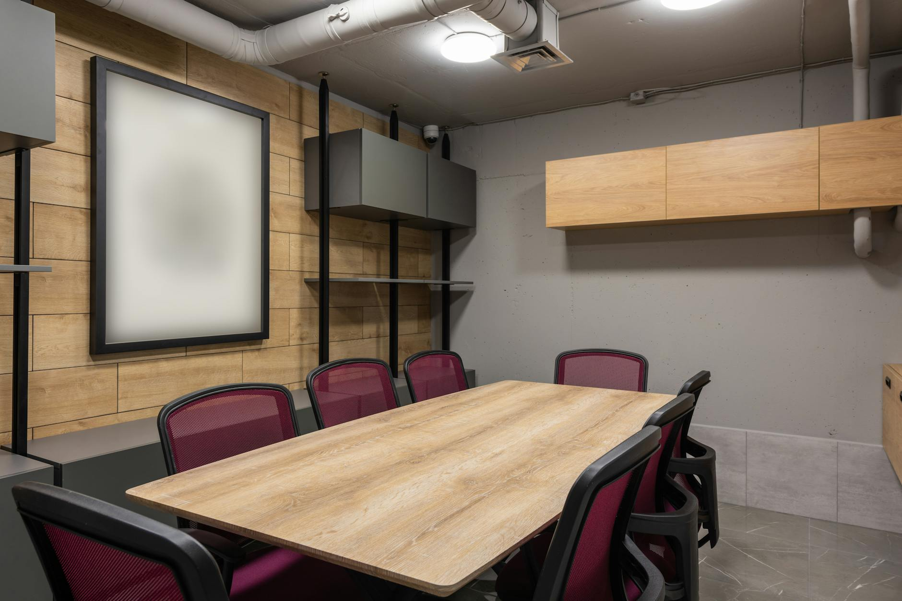

一、那张少了一个名字的合同清单
5 月 1 日，War.gov（对，国防部官网现在叫这个域名了）发了一份通告。8 家公司的名字印在上面。
SpaceX。OpenAI。Google。NVIDIA。Microsoft。AWS。Oracle。Reflection AI。
这 8 家拿到了五角大楼 Impact Level 6 和 Impact Level 7 分类网的部署许可。IL6 是机密数据级，IL7 是更高一档。换句话说，未来美国军方分类网上跑的所有大模型，从此就在这 8 家里选。
名单上有一家很特别——Reflection AI。这家公司 2024 年 3 月才注册，前 DeepMind 的两个研究员 Misha Laskin 和 Ioannis Antonoglou 创立。截止到今天，它没有任何一个公开发布的模型。
但这不耽误它进名单。它去年 10 月融了 20 亿美金，估值 80 亿，投资人里有一家叫 1789 Capital——这家 VC 的 partner 之一是 Donald Trump Jr.（就这）。
把视线挪回清单：清单上少了一个名字。
去年 7 月，国防部的 CDAO（Chief Digital and AI Office）签了一份 2 年期、上限 2 亿美金的合同，对家是 Anthropic。这是当时 Pentagon 给单家 AI 公司开过的最大原型协议。Anthropic 的 Claude 是当时美国军方分类网上唯一在跑的前沿大模型。
注意时间：去年 7 月签 2 亿美金合同，今年 5 月 1 日 8 家公司清单出炉，中间隔了 10 个月。一家公司从"五角大楼独家"变成"五角大楼黑名单"用了 10 个月，这事不是商业故事是什么。
更值得品的是名单本身：8 家里有一家模型还没公开发布、靠总统儿子的 VC 站台、连官网都还没完整搭起来的初创公司——但没有那家曾经唯一在分类网上跑过、模型迭代到 Claude Opus 4.7、企业市场份额刚刚反超 OpenAI 的 Anthropic。
这事的本质就是：你 Anthropic 在企业市场卷成第一名了，在军方市场反而被踢出去。两件事不矛盾，因为这两个市场用同一个名字的产品在卖完全不同的东西。
后面我们会拆穿这一点。

二、Anthropic 不是输给了 Trump，是输给了自己写的那份《使用守则》
把时间线拉开看一下。
2024 年 11 月：Anthropic + Palantir + AWS 三方合作，Claude 3 / 3.5 上 AWS 的政府云，定向卖给国防和情报机构。当时这事是 PR 大新闻，Anthropic 给自己贴了 "first AI lab to deploy in classified environments" 的标签。
2025 年 7 月：CDAO 给 Anthropic 颁发 2 亿美金、2 年期原型 OTA 协议。
2025 年 9 月：Anthropic 开始跟国防部谈在 GenAI.mil 平台部署 Claude 的具体落地条款，谈崩。
2026 年 2 月 15 日：Axios 独家爆料，国防部威胁切断 Anthropic。
2026 年 2 月 26 日：CNN 报道，国防部长 Pete Hegseth 给 Anthropic CEO Dario Amodei 下最后通牒，要求允许 Claude 用于 "all lawful purposes"（所有合法目的）。Amodei 公开回应：
"We cannot in good conscience accede to their request."
（我们良心上不能同意他们的请求。）
2026 年 2 月 27 日：Trump 命令所有联邦机构停用 Anthropic 产品。Hegseth 把 Anthropic 列为 "supply chain risk"——这是一个非常重的术语，原本是用来防中国元器件和恶意软件供应商的，第一次用在一家美国本土公司头上。
Fortune 当天的报道更狠，标题是《Pentagon brands Anthropic CEO Dario Amodei a 'liar' with a 'God complex'》。国防部官员公开喷 CEO 是骗子，有上帝情结。
2026 年 2 月 28 日：OpenAI 拿下 Pentagon 一份 2 亿美金合同。原本属于 Anthropic 的那个位置。
兄弟们，看到这里很多人会把这事归类为"价值观对抗"——AI 公司讲伦理，政府要打仗，两边没法谈。
错了。
这事的本质不是"Anthropic 拒绝了 Pentagon"。这事的本质是——Anthropic 自己写的那份 Acceptable Use Policy（AUP），从一开始就在合同条款层面禁止 Pentagon 想要的东西。
AUP 死守两条：第一，Claude 不得用于美国本土公民的大规模监控；第二，Claude 不得用于完全自主武器系统——也就是无人为干预即可选择和打击目标的武器。
而 Pentagon 要的 "all lawful purposes" 里，恰好包含了这两个用例。
所以这场谈判从一开始就没有协商空间。Amodei 哪怕想签字也签不了——签了，违反 Anthropic 自己对外公开的合同条款；不签，拿不到 Pentagon 的钱。
Trump 没参与决策。Hegseth 没参与决策。Amodei 没参与决策。
决策是 2021 年那份 AUP 草稿做的。当时写下 "no autonomous weapons" 那行字的工程师，才是这家公司今天真正的 CEO（笑）。
就这？就这。
三、把"安全"印在 PPT 第一页的代价
Anthropic 不知道 AUP 跟 Pentagon 要的东西冲突吗？知道。
Amodei 不知道改 AUP 一行字就能把 2 亿美金拿回来吗？也知道。
那它为什么不悄悄改 AUP，留个口子，把 Pentagon 那 2 亿美金接住？
因为它的整个商业逻辑就建立在 AUP 上。
5 月 13 日，Ramp 发布 4 月 AI Index：基于约 5 万家美国企业的真实 corporate card 和发票数据，Anthropic 的企业市场份额涨到 34.4%，OpenAI 降到 32.3%。Anthropic 第一次反超。过去 12 个月，Anthropic 的企业采用率翻了 4 倍，OpenAI 在企业端只涨了 0.3%。
同一周，SAP 在 Sapphire 大会发布 "Autonomous Enterprise"——把 Anthropic Claude 作为 50 多个 Joule Assistant 的主推理模型。再早一点，Gates Foundation 跟 Anthropic 签了 2 亿美金合作。Anthropic 的 ARR 从去年底的 90 亿美金涨到今年 4 月的 300 亿美金，预计 6 月底冲到 500 亿。
这些客户买 Claude 不是因为 Claude 的模型分数比 GPT 高——模型分数你来我往，从来没拉开过决定性差距。这些客户买的是另一项东西："我比 OpenAI 更负责任"。
财务、HR、合规、医疗、教育——所有规模化的 B2B 场景里，CFO 看的第一项是"AI 出错的法律责任谁兜"。Anthropic 把"我们家的 AI 不会出格、不会发癫、有 AUP 条款兜底"印在了销售 PPT 第一页，企业客户掏卡。
这就是 Anthropic 的护城河。
那么问题来了。
如果它为了 Pentagon 这 2 亿美金，把 AUP 开个口子——
第二天，SAP 法务部会问：你能给 Pentagon 改的口子，会不会哪天也开给我们家不爽的 HR 用例？第二天，Gates Foundation 会问：你能改给 Pentagon，能不能改给我们家不爽的 NGO 用例？第二天，那 5 万家 Ramp 客户里至少一半的 CFO 会问：你 AUP 都能改，护城河还剩什么？
那 2 亿美金的 Pentagon 合同，对应的代价是 300 亿美金 ARR 的企业市场（真的）。账谁都会算。
所以 Anthropic 不是"为伦理拒绝了 Pentagon"。Anthropic 是为了它已经赚到手的、和未来打算继续赚的钱，拒绝了 Pentagon。
"安全"是它的产品。原则是它的定价机制。
当原则变成产品的那一天，原则就要按产品规则定价——卖给一部分客户，不卖给另一部分客户。Pentagon 就是那"另一部分"。
四、Judge Lin 给的安慰奖：你赢了官司，没赢回合同
法律上，Anthropic 这场打得漂亮。
3 月 9 日，Anthropic 起诉国防部。
3 月 24 日庭审，加州联邦法官 Rita Lin 当庭质疑 Pentagon 的 "supply chain risk" 理由——记者旁听记下来法官的原话：「That seems a pretty low bar.」（这门槛挺低啊。）
3 月 26 日，Judge Lin 颁布初步禁令，写了 43 页判决书。判决书里最锋利的一句是：
"Nothing in the governing statute supports the Orwellian notion that an American company may be branded a potential adversary and saboteur of the U.S. for expressing disagreement with the government."
（现行法律里没有任何条款支持那种奥威尔式的想法——一家美国公司因为公开表达对政府的不同意见，就被打成潜在的国家敌人和破坏分子。）
判决书定性："classic illegal First Amendment retaliation"（典型的、针对第一修正案权利的违法报复）。
最致命的一刀，藏在 War.gov 自己的内部文件里——法官在判决书里指出，国防部把 Anthropic 列为"供应链风险"的实际理由，是 Anthropic "hostile manner through the press"（在媒体上的敌对态度）。
翻译过来：Anthropic 不是真有什么国家安全风险，它只是上电视的时候骂得国防部不爽。
Anthropic 赢了——在加州联邦法院。
4 月 8 日，华盛顿特区联邦上诉法院驳回了 Anthropic 临时阻止 Pentagon 黑名单的请求。这意味着虽然加州那边法官说"不许这么干"，但黑名单的实际效力还在。
然后就是 5 月 1 日的 8 家清单。Anthropic 不在。
法律层面，Anthropic 不是国家敌人，不是 saboteur，第一修正案受保护。商业层面，Pentagon 直接画了个圈：法律说你不是 saboteur，可以；但我这个圈里没你的位置。
Judge Lin 那句"奥威尔式"判决书有它的价值——它在公开记录里留下了一份证词，证明 Pentagon 是为了报复一家公司的言论自由才动用了 supply chain risk 这个国家安全工具。这份证词以后会进美国法学院的宪法第一修正案案例集。
但对 Anthropic 的现金流来说，案例集不是合同。
五、所有卖"原则"的 AI 公司都该重新算这笔账
整件事拆到这一步——Anthropic 这件事，没有一个真正意义上的反派。
Trump 不是反派。Hegseth 不是反派。Amodei 不是反派。Pentagon 也不是反派。
反派是商业逻辑本身。
当一家公司把"原则"作为差异化卖点的那一刻，它就把"原则"挂在了商品货架上。商品有客户名单，原则也有客户名单——卖给 SAP，卖给 Gates Foundation，卖给那 5 万家 Ramp 上的美国企业，但不卖给 Pentagon。
这不是 Anthropic 一家公司的问题。这是所有 2026 年靠 "safety / responsible / ethical / constitutional AI" 做差异化的 AI 公司迟早要面对的问题。
你的卖点叫"原则"，那就意味着你的产品天然有一份不可妥协的负名单。负名单上有谁，要在融资 deck 第一页就写清楚——因为投资人看到的"34.4% 企业市场份额"和投资人没看到的"五角大楼黑名单"，是同一件事的两面。
Anthropic 现在面前还剩两条路：
要么改 AUP，进 Pentagon——企业市场护城河当天清零。要么死守 AUP，不进 Pentagon——公司市值的天花板降一档，机会成本是未来 10 年美国政府和军工 AI 大蛋糕的全部份额。没有第三条路。
下一个轮到这个二选一的 AI 公司，可能是把 "safety" 印在融资 deck 第一页的某家硅谷新贵。可能是把 "responsible AI" 印在每张 slide 底部的 Google DeepMind。可能是你正在融资的那家"我们和别人不一样，我们更安全"的小公司。
把"原则"当产品卖之前，先把那份负名单写出来贴在 CEO 办公室门上。
每天进门看一眼，免得到了五角大楼把你拉黑那天才发现——
那份名单，是你自己写的。